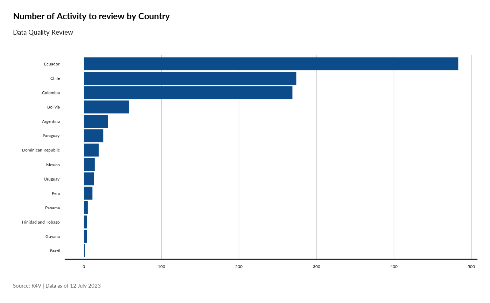
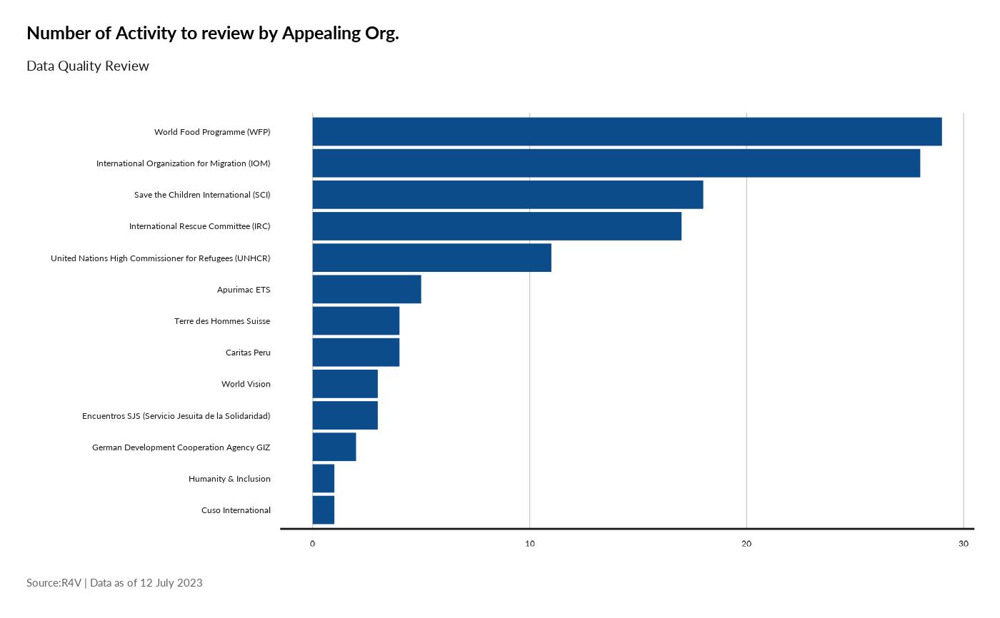

The functions perform systematic Data Quality Check
Usage
fct_error_report(
df5W,
lookup_dfadmin1,
lookup_dfadmin2,
lookup_dfindicator,
lookup_dfpartner
)Arguments
- df5W
fame with response tracking data
- lookup_dfadmin1
fame with admin1 look up
- lookup_dfadmin2
fame with admin2 look up
- lookup_dfindicator
fame with indicator look up
- lookup_dfpartner
fame with partner look up
Details
Currently this includes the 19 following Check:
__Completeness__:
1. missingcountry: Country and admin 1 information is missing. 2. countryadmincheck: Administrative unit level 1 not matching the name in the ActivityInfo 5W "admin2" reference table. 3. admin1and2check: Administrative unit level 2 not matching the name for each respective admin1 in the ActivityInfo 5W "admin2" reference table. 4. miss_appeal_org: Missing appealing organization or organization name not corresponding to the name included in the ActivityInfo 5W "partners" reference table 5. miss_setup: Checks if the field is empty, as it is mandatory to fill this variable with a "yes" for cases where there is an implementing partner, or with a "no" if the activity corresponds to direct implementation. 6. miss_implementing_org: If "yes" is selected in the "implementation set up" field, then a name for the implementing organization should be included in the corresponding field, otherwise it will retrieve an error. 7. miss_month: Missing month information. 8. missing_what: If there is missing information for the 5W "what" fields, more specifically: indicator sector, indicator, activity name, RMRP activity, and CVA.
__Consistency__: 9. wrongsectindicator: If the indicator name does not correspond to the selected sector, as per the ActivityInfo 5W "indicators RMRP 23" reference table. 10. zeroCVA: when the CVA field is "yes", then a CVA value in USD must be entered, otherwise it will retrieve an error. 11. missingmechanism: when the CVA field is "yes", then a CVA delivery mechanism must be entered, otherwise it will retrieve an error. 12. CVANotoYes: If the CVA = “No” but that the Value or Delivery Mechanism contains data, it will retrieve an error as those should be empty or the CVA should be “Yes”. 13. MultipurposeSector: It will retrieve an error when the selected indicator sector is "Multipurpose Cash Assistance (MPC)" and CVA = "No". 14. DirectAssistanceNoBenef: If the indicator type selected is "Direct Assistance" then there should be positive values entered for new monthly beneficiaries and total beneficiaries, otherwise it will retrieve an error. 15. NewBenefvstotal: if the value for new monthly beneficiaries exceeds the value of total monthly beneficiaries.
__Accuracy__: 16. PopTypeBreakdown: For "Direct Assistance" indicators, checks if the sum of the population type breakdown equals the new beneficiaries value. If an ERROR appears, please review the breakdown values or the new beneficiaries' values in the corresponding activity 17. AGDBreakdown: For "Direct Assistance" indicators, checks if the sum of the age and gender breakdown equals the new beneficiaries' value. If an ERROR appears, please review the breakdown values or the new beneficiaries' values in the corresponding activity 18. CBuildingNoBenef: For "Capacity Building" indicators, checks if there is positive values for the total monthly beneficiaries field, as this field should be reported, otherwise it will retrieve an error. 19. NoOutput: For indicators other than the ones included under "Direct Assistance" and "Capacity Building", a value for"Quantity of Output" should always be reported, otherwise it will retrieve an error.
Examples
lookup_dfadmin1 <- fct_read_lookup(type = "admin1")
lookup_dfadmin2 <- fct_read_lookup(type = "admin2")
lookup_dfpartner <- fct_read_lookup(type = "partner")
lookup_dfindicator <- fct_read_lookup(type = "indicator")
df5Wpart <- fct_read_data(filter = "partner",
value = "United Nations High Commissioner for Refugees (UNHCR)")
resultpart <- fct_error_report(df5Wpart,
lookup_dfadmin1,
lookup_dfadmin2,
lookup_dfindicator,
lookup_dfpartner)
#> Loading required package: ggplot2
print(resultpart$plot_Country)

## Second example
df5Wctr <- fct_read_data(filter = "country",
value = "Peru")
resultctr <- fct_error_report(df5Wctr,
lookup_dfadmin1,
lookup_dfadmin2,
lookup_dfindicator,
lookup_dfpartner)
print(resultctr$plot_Appealing)

## Display fixed data
head(resultctr[["ErrorReportclean"]], 10)
#> # A tibble: 10 × 38
#> Country Admin1 Admin2 Appealing_org Implementation Implementing_partner Month
#> <chr> <chr> <chr> <chr> <chr> <chr> <chr>
#> 1 Peru Lima Lima United Natio… Yes CEDRO 2023…
#> 2 Peru Lima Lima Internationa… No NA 2023…
#> 3 Peru Lima Lima Internationa… No NA 2023…
#> 4 Peru Arequ… Arequ… United Natio… Yes Encuentros SJS (Ser… 2023…
#> 5 Peru Piura Piura Internationa… No NA 2023…
#> 6 Peru Piura Piura Internationa… No NA 2023…
#> 7 Peru Lima Lima Internationa… No NA 2023…
#> 8 Peru Cusco Cusco Apurimac ETS No NA 2023…
#> 9 Peru Lima Lima United Natio… Yes Programa de Soporte… 2023…
#> 10 Peru Arequ… Arequ… Save the Chi… No NA 2023…
#> # ℹ 31 more variables: Subsector <chr>, Indicator <chr>, Activity_Name <chr>,
#> # Activity_Description <chr>, RMRPActivity <chr>, CVA <chr>, Value <dbl>,
#> # Delivery_mechanism <chr>, Quantity_output <dbl>, Total_monthly <dbl>,
#> # New_beneficiaries <dbl>, IN_DESTINATION <dbl>, IN_TRANSIT <dbl>,
#> # Host_Communities <dbl>, Girls <dbl>, Boys <dbl>, Women <dbl>, Men <dbl>,
#> # Other_under <dbl>, Other_above <dbl>, countryadmin1 <chr>,
#> # Admin1and2 <chr>, sectorindicator <chr>, IndicatorType <chr>, …